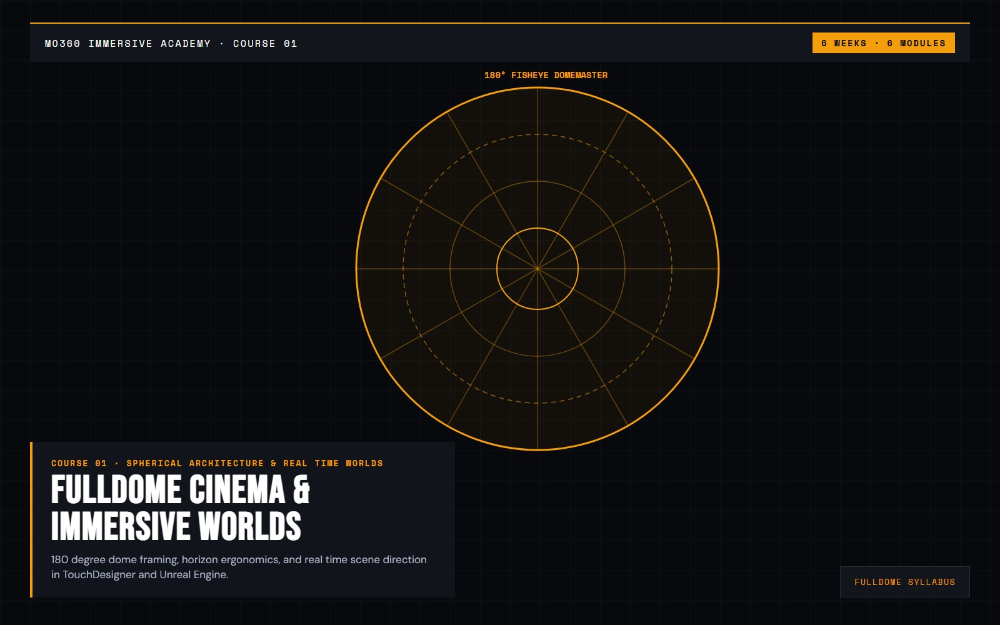

Fulldome Cinema & Real Time Immersive Worlds
Learn how to compose, light, and direct visual stories made specifically for 180 degree dome screens. Designed for artists, filmmakers, and creative technologists moving from flat frames into surrounding architectural cinema.
What You Will Achieve
- Understand spherical framing, horizon comfort, and audience sightlines inside a dome
- Build responsive 3D scenes in TouchDesigner and Unreal Engine suited to wide curved projection
- Deliver a finished high resolution dome master film ready for festival or venue screening
View 6 Week Curriculum
- Week 1Foundations of Real Time 3D CompositionNavigating real time scene workspaces, framing for overhead spaces, and building your first architectural form.
- Week 2Spherical Lighting & AtmosphereShaping mood, depth, and colour across a full hemisphere without jarring seams or eye strain.
- Week 3180 Degree Fulldome Projection FramingConverting 3D worlds into clean circular dome masters while keeping motion smooth and comfortable.
- Week 4Real Time Environments in Unreal EngineDesigning richly lit virtual worlds, particles, and natural camera movement for dome playback.
- Week 5Live Visual Control & PerformanceConnecting live video feeds and external controllers so visuals respond in real time during screenings.
- Week 6Mastering & Screening DeliveryFinal colour checks, high resolution rendering, and preparing exhibition files for dome venues.